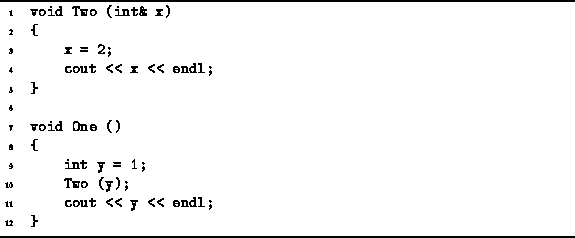

Data Structures and Algorithms
with Object-Oriented Design Patterns in C++
Data Structures and Algorithms
with Object-Oriented Design Patterns in C++
Consider the pair of C++ functions defined in Program  .
The only difference between this code and the code given in Program
is the definition of the formal parameter of the function Two:
In this case,
the parameter x is declared to be a reference to an int.
In general, if the type of a formal parameter is a reference,
then the parameter passing method is
pass-by-reference .
.
The only difference between this code and the code given in Program
is the definition of the formal parameter of the function Two:
In this case,
the parameter x is declared to be a reference to an int.
In general, if the type of a formal parameter is a reference,
then the parameter passing method is
pass-by-reference .

Program: Example of Pass-By-Reference Parameter Passing
A reference formal parameter is not a variable. When a function is called that has a reference formal parameter, the effect of the call is to associate the reference with the corresponding actual parameter. I.e., the reference becomes an alternative name for the corresponding actual parameter. Consequently, this means that the actual parameter passed by reference must be variable.
A reference formal parameter can be used in the
called function everywhere that a variable can be used.
In particular, if the reference formal parameter is used
where a r-value is required,
it is the r-value of actual parameter that is obtained.
Similarly, if the reference parameter is used where an l-value is required,
it is the l-value of actual parameter that is obtained.
Therefore, the output obtained produced by the function One
defined in Program is:
2 2
 Copyright © 1997 by Bruno R. Preiss, P.Eng. All rights reserved.
Copyright © 1997 by Bruno R. Preiss, P.Eng. All rights reserved.